CODING AGENTS AS PIXEL WORLD MODELS
traex/DeepSeek-V4.1-Flash · common50_0007
点击播放 · 原生 RGB 像素
逐轮保存的候选
回放视频、检查图与代码变化。
每份候选均可单独播放。实际图片检查记录在下方工具轨迹中。
候选 01播放与检查图
点击播放 · 原生 RGB 像素
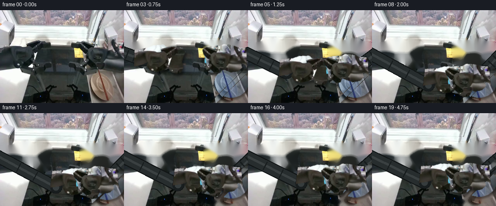
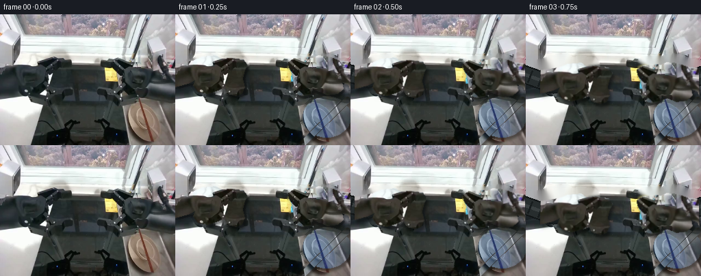
展开代码变化
--- 上一保存版本
+++ 本次保存版本
@@ -0,0 +1,316 @@
+from pathlib import Path
+
+import cv2
+import numpy as np
+from PIL import Image
+
+import artifact_io
+
+
+ROOT = Path(__file__).resolve().parent
+FRAMES = 20
+WIDTH = 256
+HEIGHT = 192
+FPS = 4
+
+
+def smoothstep(value):
+ value = float(np.clip(value, 0.0, 1.0))
+ return value * value * (3.0 - 2.0 * value)
+
+
+def polygon_mask(shape, points):
+ mask = np.zeros(shape, dtype=np.uint8)
+ cv2.fillPoly(mask, [np.asarray(points, dtype=np.int32)], 255)
+ return cv2.GaussianBlur(mask, (3, 3), 0.45)
+
+
+def ellipse_mask(shape, center, axes):
+ mask = np.zeros(shape, dtype=np.uint8)
+ cv2.ellipse(mask, center, axes, 0, 0, 360, 255, -1)
+ return cv2.GaussianBlur(mask, (3, 3), 0.45)
+
+
+def line_mask(shape, start, end, thickness):
+ mask = np.zeros(shape, dtype=np.uint8)
+ cv2.line(mask, start, end, 255, thickness, cv2.LINE_AA)
+ return cv2.GaussianBlur(mask, (3, 3), 0.40)
+
+
+def make_layer(image, alpha):
+ layer = np.dstack((image, alpha)).astype(np.uint8)
+ return layer
+
+
+def transform_layer(layer, dx, dy, angle=0.0, pivot=(0.0, 0.0)):
+ height, width = layer.shape[:2]
+ if abs(angle) < 1e-6:
+ matrix = np.array([[1.0, 0.0, dx], [0.0, 1.0, dy]], dtype=np.float32)
+ else:
+ rotation = cv2.getRotationMatrix2D(pivot, angle, 1.0)
+ pivot_x, pivot_y = pivot
+ rotation[:, 2] += (
+ np.array([dx, dy], dtype=np.float32)
+ - rotation[:, :2] @ np.array([pivot_x, pivot_y], dtype=np.float32)
+ + np.array([pivot_x, pivot_y], dtype=np.float32)
+ )
+ matrix = rotation
+
+ color = cv2.warpAffine(
+ layer[:, :, :3],
+ matrix,
+ (width, height),
+ flags=cv2.INTER_LINEAR,
+ borderMode=cv2.BORDER_CONSTANT,
+ borderValue=(0, 0, 0),
+ )
+ alpha = cv2.warpAffine(
+ layer[:, :, 3],
+ matrix,
+ (width, height),
+ flags=cv2.INTER_LINEAR,
+ borderMode=cv2.BORDER_CONSTANT,
+ borderValue=0,
+ )
+ return color.astype(np.float32), alpha.astype(np.float32) / 255.0
+
+
+def alpha_composite(base, color, alpha):
+ alpha_3 = alpha[:, :, None]
+ return base.astype(np.float32) * (1.0 - alpha_3) + color.astype(np.float32) * alpha_3
+
+
+def draw_shadow(canvas, alpha, offset=(3, 5), blur=5, strength=0.48):
+ shifted = np.zeros_like(alpha, dtype=np.float32)
+ dx, dy = offset
+ x0, x1 = max(0, dx), min(alpha.shape[1], alpha.shape[1] + dx)
+ y0, y1 = max(0, dy), min(alpha.shape[0], alpha.shape[0] + dy)
+ sx0, sx1 = max(0, -dx), min(alpha.shape[1], alpha.shape[1] - dx)
+ sy0, sy1 = max(0, -dy), min(alpha.shape[0], alpha.shape[0] - dy)
+ shifted[y0:y1, x0:x1] = alpha[sy0:sy1, sx0:sx1]
+ shifted = cv2.GaussianBlur(shifted, (blur * 2 + 1, blur * 2 + 1), 0)
+ multiplier = 1.0 - strength * shifted[:, :, None]
+ return canvas * multiplier
+
+
+def draw_telescoping_arm(canvas, start, end, width=20):
+ start = tuple(int(round(v)) for v in start)
+ end = tuple(int(round(v)) for v in end)
+ overlay = canvas.copy()
+ cv2.line(overlay, start, end, (18, 22, 23), width + 5, cv2.LINE_AA)
+ cv2.line(overlay, start, end, (39, 45, 46), width, cv2.LINE_AA)
+ cv2.line(overlay, start, end, (58, 64, 65), max(3, width // 5), cv2.LINE_AA)
+
+ length = float(np.hypot(end[0] - start[0], end[1] - start[1]))
+ if length > 8:
+ direction = np.array(end, dtype=np.float32) - np.array(start, dtype=np.float32)
+ direction /= max(length, 1e-6)
+ normal = np.array([-direction[1], direction[0]], dtype=np.float32)
+ for fraction in (0.42, 0.68):
+ center = np.array(start, dtype=np.float32) + direction * length * fraction
+ p1 = center + normal * (width * 0.42)
+ p2 = center - normal * (width * 0.42)
+ cv2.line(
+ overlay,
+ tuple(np.round(p1).astype(int)),
+ tuple(np.round(p2).astype(int)),
+ (24, 29, 30),
+ 2,
+ cv2.LINE_AA,
+ )
+ cv2.circle(overlay, end, width // 2 + 2, (25, 30, 31), -1, cv2.LINE_AA)
+ cv2.circle(overlay, end, max(5, width // 3), (54, 60, 61), -1, cv2.LINE_AA)
+ return overlay
+
+
+def build_scene():
+ source_bgr = cv2.imread(str(ROOT / "first_frame.png"), cv2.IMREAD_COLOR)
+ if source_bgr is None:
+ raise RuntimeError("first_frame.png could not be read")
+ source_bgr = cv2.resize(source_bgr, (WIDTH, HEIGHT), interpolation=cv2.INTER_AREA)
+ source_rgb = cv2.cvtColor(source_bgr, cv2.COLOR_BGR2RGB)
+ shape = source_bgr.shape[:2]
+
+ left_arm_points = [
+ (0, 72), (25, 68), (39, 62), (59, 60), (66, 65), (82, 64),
+ (99, 66), (105, 74), (101, 82), (98, 94), (101, 106),
+ (97, 116), (88, 119), (76, 116), (72, 108), (59, 112),
+ (47, 116), (33, 113), (26, 104), (29, 96), (18, 101), (0, 106),
+ ]
+ right_arm_points = [
+ (255, 70), (238, 67), (224, 62), (208, 60), (201, 64),
+ (191, 63), (173, 64), (165, 70), (166, 78), (170, 85),
+ (169, 94), (170, 105), (174, 115), (185, 119), (196, 117),
+ (201, 109), (210, 113), (222, 118), (237, 116), (245, 109),
+ (243, 99), (253, 103), (255, 109),
+ ]
+ left_alpha = polygon_mask(shape, left_arm_points)
+ right_alpha = polygon_mask(shape, right_arm_points)
+
+ bowl_alpha = ellipse_mask(shape, (221, 150), (35, 30))
+ stick_alpha = line_mask(shape, (251, 125), (184, 191), 8)
+
+ # The chopsticks sit over the bowl. Keeping their pixels in the stick layer
+ # prevents the two objects from being duplicated when they separate.
+ stick_solid = (stick_alpha > 10).astype(np.uint8) * 255
+ bowl_alpha[stick_solid > 0] = 0
+
+ left_layer = make_layer(source_bgr, left_alpha)
+ right_layer = make_layer(source_bgr, right_alpha)
+ bowl_layer = make_layer(source_bgr, bowl_alpha)
+ stick_layer = make_layer(source_bgr, stick_alpha)
+
+ occupied = np.maximum.reduce([left_alpha, right_alpha, bowl_alpha, stick_alpha])
+ occupied = cv2.dilate((occupied > 5).astype(np.uint8) * 255, np.ones((5, 5), np.uint8))
+ background_bgr = cv2.inpaint(source_bgr, occupied, 7, cv2.INPAINT_TELEA)
+
+ # Large inpainted regions on the black table can drift lighter than the
+ # surrounding surface. Pull those low-luminance pixels back toward the
+ # table's local tone while leaving the sink and window intact.
+ gray = cv2.cvtColor(background_bgr, cv2.COLOR_BGR2GRAY)
+ table_zone = (gray < 85) & (occupied > 0)
+ background_bgr[table_zone] = (
+ background_bgr[table_zone].astype(np.float32) * 0.82
+ ).astype(np.uint8)
+ background_rgb = cv2.cvtColor(background_bgr, cv2.COLOR_BGR2RGB)
+
+ return (
+ source_rgb,
+ background_rgb,
+ left_layer,
+ right_layer,
+ bowl_layer,
+ stick_layer,
+ )
+
+
+def compose_frame(
+ background,
+ left_layer,
+ right_layer,
+ bowl_layer,
+ stick_layer,
+ left_dx,
+ left_dy,
+ right_dx,
+ right_dy,
+ left_angle,
+ right_angle,
+ bowl_dx,
+ bowl_dy,
+ stick_dx,
+ stick_dy,
+ stick_angle,
+):
+ canvas = background.astype(np.float32)
+
+ left_color, left_alpha = transform_layer(
+ left_layer, left_dx, left_dy, left_angle, pivot=(67.0, 90.0)
+ )
+ right_color, right_alpha = transform_layer(
+ right_layer, right_dx, right_dy, right_angle, pivot=(194.0, 90.0)
+ )
+ bowl_color, bowl_alpha = transform_layer(
+ bowl_layer, bowl_dx, bowl_dy, 0.0, pivot=(221.0, 150.0)
+ )
+ stick_color, stick_alpha = transform_layer(
+ stick_layer, stick_dx, stick_dy, stick_angle, pivot=(218.0, 158.0)
+ )
+
+ arm_shadow = np.maximum(left_alpha, right_alpha)
+ object_shadow = np.maximum(bowl_alpha, stick_alpha)
+ canvas = draw_shadow(canvas, arm_shadow, offset=(3, 5), blur=5, strength=0.42)
+ canvas = draw_shadow(canvas, object_shadow, offset=(2, 4), blur=4, strength=0.36)
+
+ # The telescoping sections connect each rigid gripper to its off-screen base.
+ left_base = (21.0 + left_dx, 90.0 + left_dy)
+ right_base = (238.0 + right_dx, 90.0 + right_dy)
+ canvas = draw_telescoping_arm(canvas, (-18, 82), left_base, width=21)
+ canvas = draw_telescoping_arm(canvas, (274, 82), right_base, width=21)
+
+ canvas = alpha_composite(canvas, bowl_color, bowl_alpha)
+ canvas = alpha_composite(canvas, stick_color, stick_alpha)
+ canvas = alpha_composite(canvas, left_color, left_alpha)
+ canvas = alpha_composite(canvas, right_color, right_alpha)
+ return np.clip(canvas, 0, 255).astype(np.uint8)
+
+
+def generate():
+ (
+ source,
+ background,
+ left_layer,
+ right_layer,
+ bowl_layer,
+ stick_layer,
+ ) = build_scene()
+
+ frames = []
+ for frame_index in range(FRAMES):
+ if frame_index == 0:
+ frames.append(source.copy())
+ continue
+
+ reach = smoothstep((frame_index - 1) / 7.0)
+ lift = smoothstep((frame_index - 8) / 11.0)
+
+ left_dx = 95.0 * reach - 8.0 * lift
+ left_dy = 65.0 * reach - 12.0 * lift
+ right_dx = -5.0 * reach
+ right_dy = 35.0 * reach - 8.0 * lift
+ left_angle = -7.0 * reach
+ right_angle = 5.0 * reach
+
+ bowl_dx = 0.0
+ bowl_dy = -8.0 * lift
+ stick_dx = -8.0 * lift
+ stick_dy = -12.0 * lift
+ stick_angle = -5.0 * lift
+
+ frames.append(
+ compose_frame(
+ background,
+ left_layer,
+ right_layer,
+ bowl_layer,
+ stick_layer,
+ left_dx,
+ left_dy,
+ right_dx,
+ right_dy,
+ left_angle,
+ right_angle,
+ bowl_dx,
+ bowl_dy,
+ stick_dx,
+ stick_dy,
+ stick_angle,
+ )
+ )
+
+ frames = np.stack(frames, axis=0).astype(np.uint8)
+ assert frames.shape == (FRAMES, HEIGHT, WIDTH, 3), frames.shape
+ assert frames.dtype == np.uint8
+ assert np.array_equal(frames[0], source), "frame 0 must match first_frame.png exactly"
+ return frames
+
+
+def write_preview(frames):
+ writer = cv2.VideoWriter(
+ str(ROOT / "preview.mp4"),
+ cv2.VideoWriter_fourcc(*"mp4v"),
+ FPS,
+ (WIDTH, HEIGHT),
+ )
+ if not writer.isOpened():
+ return
+ for frame in frames:
+ writer.write(cv2.cvtColor(frame, cv2.COLOR_RGB2BGR))
+ writer.release()
+
+
+if __name__ == "__main__":
+ generated = generate()
+ artifact_io.save(generated, ROOT)
+ write_preview(generated)
+ print(f"saved {generated.shape} uint8 RGB frames to {ROOT}")
可观测工具轨迹
实际执行的命令与返回图片。
命令 1exit 0
/bin/bash -c "pwd && rg --files -g '"'!*'"\\.git*' | sed -n '1,160p'"
命令 2exit 0
/bin/bash -c "sed -n '1,240p' prompt.txt"
命令 3exit 0
/bin/bash -c "sed -n '1,280p' GENERATION_RULES.md"
命令 4exit 0
/bin/bash -c 'file first_frame.png && identify first_frame.png 2>/dev/null || true && git status --short'
命令 5exit 0
/bin/bash -c "sed -n '1,240p' task_spec.json"
命令 6exit 0
/bin/bash -c "sed -n '1,260p' artifact_io.py"
命令 7exit 0
/bin/bash -c "sed -n '1,280p' player_template.html"
命令 8exit 0
/bin/bash -c "python - <<'PY'
from PIL import Image
import numpy as np
im=Image.open('first_frame.png')
print(im.size, im.mode)
a=np.asarray(im.convert('RGB'))
print(a.shape, a.dtype, a.min(), a.max())
PY"命令 9exit 0
/bin/bash -c "python - <<'PY'
from PIL import Image
im=Image.open('first_frame.png')
im.resize((1024,768), Image.Resampling.NEAREST).save('first_frame_4x.png')
PY"命令 10exit 0
/bin/bash -c "python - <<'PY' mods=['numpy','PIL','cv2','scipy','skimage'] for m in mods: try: x=__import__(m); print(m,'ok',getattr(x,'__version__','')) except Exception as e: print(m,'ERR',e) PY"
命令 11exit 0
/bin/bash -c "python - <<'PY'
from PIL import Image,ImageDraw,ImageFont
im=Image.open('first_frame.png').resize((1024,768),Image.Resampling.NEAREST)
d=ImageDraw.Draw(im)
for x in range(0,257,16):
X=x*4; d.line((X,0,X,768),fill=(255,0,0),width=1); d.text((X+2,2),str(x),fill=(255,80,80))
for y in range(0,193,16):
Y=y*4; d.line((0,Y,1024,Y),fill=(0,255,255),width=1); d.text((2,Y+1),str(y),fill=(100,255,255))
im.save('grid.png')
PY"命令 12exit 0
/bin/bash -c "python - <<'PY'
import cv2, numpy as np
from PIL import Image
src=cv2.imread('first_frame.png')
h,w=src.shape[:2]
mask=np.zeros((h,w),np.uint8)
# arm polygons
lp=np.array([[0,72],[25,68],[39,62],[59,60],[66,65],[82,64],[99,66],[105,74],[101,82],[98,94],[101,106],[97,116],[88,119],[76,116],[72,108],[59,112],[47,116],[33,113],[26,104],[29,96],[18,101],[0,106]],np.int32)
rp=np.array([[255,70],[238,67],[224,62],[208,60],[201,64],[191,63],[173,64],[165,70],[166,78],[170,85],[169,94],[170,105],[174,115],[185,119],[196,117],[201,109],[210,113],[222,118],[237,116],[245,109],[243,99],[253,103],[255,109]],np.int32)
# fill polygons then add tubes
cv2.fillPoly(mask,[lp],255); cv2.fillPoly(mask,[rp],255)
# bowl and sticks
obj=np.zeros_like(mask)
cv2.ellipse(obj,(221,150),(36,30),0,0,360,255,-1)
cv2.line(obj,(251,126),(184,191),255,10)
# Dilate arm by 2 for shadow, object by 1
arm_mask=cv2.dilate(mask,np.ones((3,3),np.uint8),iterations=1)
obj_mask=cv2.dilate(obj,np.ones((3,3),np.uint8),iterations=1)
allmask=cv2.bitwise_or(arm_mask,obj_mask)
for name,m in [('arm',arm_mask),('obj',obj_mask),('all',allmask)]:
b=cv2.inpaint(src,m,5,cv2.INPAINT_TELEA)
cv2.imwrite(f'bg_{name}.png',b)
ov=src.copy(); ov[m>0]=(ov[m>0]*0.25+np.array([0,0,255])*0.75).astype(np.uint8)
cv2.imwrite(f'mask_{name}.png',ov)
print('mask pixels',arm_mask.sum()//255,obj_mask.sum()//255)
PY"命令 13exit 0
/bin/bash -c "python - <<'PY'
import cv2,numpy as np
im=cv2.imread('first_frame.png')
for p in [(90,90),(90,80),(90,100),(210,90),(210,80),(210,100),(220,155),(235,155),(195,150),(215,135),(225,175),(250,130),(188,188),(245,140)]:
x,y=p; print(p,im[y,x][::-1].tolist())
PY"命令 14exit 0
/bin/bash -c "python - <<'PY'
from PIL import Image
for f in ['bg_all.png','bg_arm.png']:
Image.open(f).resize((1024,768),Image.Resampling.NEAREST).save(f.replace('.png','_4x.png'))
PY"命令 15exit 0
/bin/bash -c "python - <<'PY'
from PIL import Image
im=Image.open('first_frame.png')
for name,box in [('left',(0,45,120,135)),('right',(145,45,256,135)),('bowl',(175,112,256,192))]:
c=im.crop(box); c.resize((c.width*6,c.height*6),Image.Resampling.NEAREST).save(name+'_crop.png')
PY"命令 16exit 0
/bin/bash -c "python - <<'PY'
import cv2, numpy as np
im=cv2.imread('first_frame.png')
for y in range(50,126,10):
print('y',y,[(x,tuple(int(v) for v in im[y,x][::-1])) for x in [0,10,20,30,40,50,60,70,80,90,100,110,120,140,160,180,200,220,240,255]])
PY"命令 17exit 0
/bin/bash -c "python - <<'PY'
from PIL import Image,ImageDraw
for name,box in [('left',(0,45,125,130)),('right',(150,45,256,130)),('bowl',(175,112,256,192))]:
im=Image.open('first_frame.png').crop(box).resize(((box[2]-box[0])*8,(box[3]-box[1])*8),Image.Resampling.NEAREST)
d=ImageDraw.Draw(im)
for x in range(0,box[2]-box[0]+1,10):
X=x*8; d.line((X,0,X,im.height),fill=(255,30,30),width=1); d.text((X+1,1),str(x+box[0]),fill=(255,80,80))
for y in range(0,box[3]-box[1]+1,10):
Y=y*8; d.line((0,Y,im.width,Y),fill=(20,220,255),width=1); d.text((1,Y+1),str(y+box[1]),fill=(80,240,255))
im.save(name+'_grid.png')
PY"命令 18exit 0
/bin/bash -c "python - <<'PY'
import cv2, numpy as np
im=cv2.imread('first_frame.png')
g=cv2.cvtColor(im,cv2.COLOR_BGR2GRAY)
# report edge / line segments in object region for chopstick
roi=g[115:192,175:256]
edges=cv2.Canny(roi,40,100)
lines=cv2.HoughLinesP(edges,1,np.pi/180,threshold=12,minLineLength=25,maxLineGap=4)
print(lines[:,0].tolist() if lines is not None else None)
PY"命令 19exit 0
/bin/bash -c "python - <<'PY'
import cv2, numpy as np
from PIL import Image
im=cv2.imread('first_frame.png')
# accurate masks
left=np.array([[0,68],[12,65],[20,61],[33,59],[43,61],[55,63],[61,67],[64,76],[65,88],[64,101],[68,108],[64,116],[56,119],[47,115],[36,111],[27,108],[20,101],[22,94],[13,91],[0,89]],np.int32)
right=np.array([[255,66],[242,63],[231,60],[218,61],[209,63],[200,67],[196,74],[195,87],[195,99],[192,108],[196,116],[204,119],[214,116],[223,111],[233,108],[241,100],[240,92],[250,90],[255,88]],np.int32)
mask=np.zeros(im.shape[:2],np.uint8)
cv2.fillPoly(mask,[left],255);cv2.fillPoly(mask,[right],255)
# keep detailed original silhouettes within polygon by thresholding dark pixels but connected edges remain
# Use polygon as the stable silhouette.
mask=cv2.morphologyEx(mask,cv2.MORPH_CLOSE,np.ones((3,3),np.uint8))
# object masks exact:
obj=np.zeros_like(mask)
# bowl ellipse center 222,151 rx35 ry29
cv2.ellipse(obj,(222,151),(35,29),0,0,360,255,-1)
# chopstick centerline from (252,124) to (184,190), broad 6 px, clipped
cv2.line(obj,(253,123),(183,191),255,8)
# remove parts where bowl + stick close? union
obj=cv2.morphologyEx(obj,cv2.MORPH_CLOSE,np.ones((3,3),np.uint8))
# exclude background from bowl mask by segmentation brightness? no, this is enough.
cv2.imwrite('mask2_arm.png',mask);cv2.imwrite('mask2_obj.png',obj)
for name,m,ks in [('arm',mask,7),('obj',obj,5)]:
bg=cv2.inpaint(im,m,ks,cv2.INPAINT_TELEA)
cv2.imwrite('bg2_'+name+'.png',bg)
ov=im.copy();ov[obj>0]=(ov[obj>0]*0.15+np.array([0,0,255])*0.85).astype(np.uint8);cv2.imwrite('mask2_obj_overlay.png',ov)
PY"命令 20exit 0
/bin/bash -c "python - <<'PY'
import cv2, numpy as np
im=cv2.imread('first_frame.png')
mask=np.zeros(im.shape[:2],np.uint8)
left=np.array([[0,69],[8,66],[19,61],[31,59],[43,61],[55,63],[61,68],[64,77],[65,88],[64,100],[68,108],[64,116],[56,119],[47,115],[36,111],[27,108],[20,102],[22,94],[13,91],[0,89]],np.int32)
right=np.array([[255,66],[242,63],[231,60],[218,61],[209,63],[200,67],[196,75],[195,87],[195,99],[192,108],[196,116],[204,119],[214,116],[223,111],[233,108],[241,100],[240,92],[250,90],[255,88]],np.int32)
cv2.fillPoly(mask,[left],255);cv2.fillPoly(mask,[right],255)
# add gripper fingers outside rough polygon for accurate silhouette
# Right: fingers at x194..214, y66..120 mostly covered, fine
# Save premultiplied RGBA layers
layers={}
for name,pts in [('left',left),('right',right)]:
m=np.zeros(im.shape[:2],np.uint8);cv2.fillPoly(m,[pts],255);m=cv2.GaussianBlur(m,(3,3),0.55)
rgba=np.dstack([im,cv2.cvtColor(im,cv2.COLOR_BGR2GRAY)*0]) # alpha placeholder
rgba[:,:,3]=m
cv2.imwrite('layer_'+name+'.png',rgba)
cv2.imwrite('mask_'+name+'.png',m)
# bowl mask precise with stick
obj=np.zeros(im.shape[:2],np.uint8)
cv2.ellipse(obj,(221,150),(35,30),0,0,360,255,-1)
cv2.line(obj,(251,125),(184,190),255,9)
obj=cv2.GaussianBlur(obj,(3,3),0.6)
rgba=np.dstack([im,obj]);cv2.imwrite('layer_obj.png',rgba);cv2.imwrite('mask_obj2.png',obj)
PY"命令 21exit 0
/bin/bash -c 'python generate.py'
命令 22exit 0
/bin/bash -c "python - <<'PY'
import cv2, numpy as np
from PIL import Image
im=cv2.imread('first_frame.png')
# make rough polygons and test multiple mask rules within
left=np.array([[0,69],[8,66],[19,61],[31,59],[43,61],[55,63],[61,68],[64,77],[65,88],[64,100],[68,108],[64,116],[56,119],[47,115],[36,111],[27,108],[20,102],[22,94],[13,91],[0,89]],np.int32)
right=np.array([[255,66],[242,63],[231,60],[218,61],[209,63],[200,67],[196,75],[195,87],[195,99],[192,108],[196,116],[204,119],[214,116],[223,111],[233,108],[241,100],[240,92],[250,90],[255,88]],np.int32)
poly=np.zeros(im.shape[:2],np.uint8); cv2.fillPoly(poly,[left,right],255)
g=cv2.cvtColor(im,cv2.COLOR_BGR2GRAY)
hsv=cv2.cvtColor(im,cv2.COLOR_BGR2HSV)
for t in [90,110,130,150,170,190,210]:
m=((g<t)&(poly>0)).astype(np.uint8)*255
# close and retain largest? draw overlay
ov=im.copy();ov[m>0]=(ov[m>0]*.25+np.array([0,0,255])*.75).astype(np.uint8)
cv2.imwrite(f'seg_{t}.png',ov)
PY"命令 23exit 0
/bin/bash -c "python - <<'PY'
from PIL import Image
im=Image.open('first_frame.png')
# color posterize 8 levels, upscale
import numpy as np
a=np.asarray(im)//16*16
Image.fromarray(a.astype('uint8')).resize((1024,768),Image.Resampling.NEAREST).save('poster8.png')
PY"命令 24exit 0
/bin/bash -c "python - <<'PY'
import cv2, numpy as np
im=cv2.imread('first_frame.png')
# Print ascii darkness map around arms with 2x2 blocks
g=cv2.cvtColor(im,cv2.COLOR_BGR2GRAY)
for y0 in range(52,128,4):
row=''
for x0 in range(0,256,4):
v=g[y0:y0+4,x0:x0+4].mean()
row += ' .:-=+*#%@'[min(9,int((255-v)/25.6))]
print(f'{y0:03d} {row}')
PY"命令 25exit 0
/bin/bash -c "python - <<'PY'
import cv2, numpy as np
im=cv2.imread('first_frame.png')
g=cv2.cvtColor(im,cv2.COLOR_BGR2GRAY)
# rough masks and inspect hard threshold connected comps
poly=np.zeros(g.shape,np.uint8)
left=np.array([[0,69],[8,66],[19,61],[31,59],[43,61],[55,63],[61,68],[64,77],[65,88],[64,100],[68,108],[64,116],[56,119],[47,115],[36,111],[27,108],[20,102],[22,94],[13,91],[0,89]],np.int32)
right=np.array([[255,66],[242,63],[231,60],[218,61],[209,63],[200,67],[196,75],[195,87],[195,99],[192,108],[196,116],[204,119],[214,116],[223,111],[233,108],[241,100],[240,92],[250,90],[255,88]],np.int32)
cv2.fillPoly(poly,[left,right],255)
for t in [95,105,115,125,135,145,155,165,175,185,195,205,215,225]:
m=((g<t)&(poly>0)).astype(np.uint8)
n,l,st,cent=cv2.connectedComponentsWithStats(m,8)
sizes=sorted(st[1:,4],reverse=True)[:8]
print(t,sizes)
PY"命令 26exit 0
/bin/bash -c "python - <<'PY'
import cv2, numpy as np
im=cv2.imread('first_frame.png');g=cv2.cvtColor(im,cv2.COLOR_BGR2GRAY)
# use distance-limited region masks. Fill silhouette via flood fill of background based on boundary? We'll make two alpha from component threshold + small closing.
leftpoly=np.zeros(g.shape,np.uint8);rightpoly=np.zeros(g.shape,np.uint8)
cv2.fillPoly(leftpoly,[np.array([[0,65],[12,60],[22,58],[35,58],[47,60],[58,62],[65,66],[68,77],[67,90],[66,104],[71,109],[65,118],[54,121],[43,117],[32,113],[23,108],[19,99],[16,90],[0,90]],np.int32)],255)
cv2.fillPoly(rightpoly,[np.array([[255,64],[241,60],[229,58],[216,59],[207,62],[199,66],[192,74],[190,86],[190,99],[187,107],[193,117],[204,121],[215,118],[225,113],[235,109],[244,101],[243,91],[253,90],[255,88]],np.int32)],255)
for side,poly in [('left',leftpoly),('right',rightpoly)]:
for t in [125,145,165,185,205]:
m=((g<t)&(poly>0)).astype(np.uint8)
n,l,st,c=cv2.connectedComponentsWithStats(m,8)
keep=np.zeros_like(m)
if n>1:
idx=1+np.argmax(st[1:,4]); keep[l==idx]=1
keep=cv2.morphologyEx(keep,cv2.MORPH_CLOSE,np.ones((5,5),np.uint8))
keep=cv2.dilate(keep,np.ones((3,3),np.uint8))
keep &= (poly>0)
ov=im.copy();ov[keep>0]=(ov[keep>0]*.2+np.array([0,0,255])*.8).astype(np.uint8)
cv2.imwrite(f'{side}_keep_{t}.png',ov)
PY"命令 27exit 0
/bin/bash -c "python - <<'PY'
from PIL import Image
im=Image.open('first_frame.png')
for name,box in [('le',(50,54,110,126)),('re',(160,54,214,126))]:
im.crop(box).resize(((box[2]-box[0])*10,(box[3]-box[1])*10),Image.Resampling.NEAREST).save(name+'.png')
PY"命令 28exit 0
/bin/bash -c "python - <<'PY'
import cv2,numpy as np
im=cv2.imread('first_frame.png');g=cv2.cvtColor(im,cv2.COLOR_BGR2GRAY)
# create hand traced inner dark silhouette masks and apply threshold cutoff at 180 then close; silhouette from rough poly intersects threshold
L=np.array([[0,68],[14,64],[23,60],[35,58],[45,60],[57,62],[64,66],[67,75],[67,88],[67,100],[71,109],[65,117],[56,120],[47,116],[37,112],[28,108],[21,101],[18,92],[0,90]],np.int32)
R=np.array([[255,65],[241,62],[229,59],[217,60],[208,63],[200,67],[194,73],[192,84],[191,97],[188,106],[193,115],[203,119],[213,117],[223,112],[234,108],[243,100],[242,91],[252,89],[255,87]],np.int32)
for name,pts in [('L',L),('R',R)]:
poly=np.zeros(g.shape,np.uint8);cv2.fillPoly(poly,[pts],255)
m=((g<190)&(poly>0)).astype(np.uint8)
n,l,st,c=cv2.connectedComponentsWithStats(m,8)
keep=np.zeros_like(m)
for i in range(1,n):
if st[i,4]>300: keep[l==i]=1
keep=cv2.morphologyEx(keep,cv2.MORPH_CLOSE,np.ones((5,5),np.uint8))
keep=cv2.GaussianBlur(keep*255,(3,3),0.5)
cv2.imwrite(f'trace_{name}.png',keep)
rgba=np.dstack([im,keep]);cv2.imwrite(f'trace_layer_{name}.png',rgba)
ov=im.copy();ov[keep>100]=(ov[keep>100]*.25+np.array([0,0,255])*.75).astype(np.uint8);cv2.imwrite(f'trace_ov_{name}.png',ov)
PY"命令 29exit 0
/bin/bash -c "python - <<'PY'
import cv2,numpy as np
im=cv2.imread('first_frame.png');g=cv2.cvtColor(im,cv2.COLOR_BGR2GRAY)
# inspect dark areas by printing color means of mask candidates; estimate table bgr distribution
for box in [(70,70,100,120),(175,70,200,120),(30,90,60,120)]:
x0,y0,x1,y1=box;a=im[y0:y1,x0:x1]
print(box,a.reshape(-1,3).mean(0),a.reshape(-1,3).std(0))
PY"命令 30exit 0
/bin/bash -c "python - <<'PY'
import cv2,numpy as np
im=cv2.imread('first_frame.png');g=cv2.cvtColor(im,cv2.COLOR_BGR2GRAY)
# Save a silhouette of all pixels below 210 in arm region, but exclude table interior using polygon union tight
mask=np.zeros(g.shape,np.uint8)
cv2.fillPoly(mask,[np.array([[0,68],[10,64],[20,60],[31,58],[45,59],[58,62],[65,67],[68,77],[67,90],[66,102],[71,109],[65,118],[54,121],[43,116],[33,112],[24,107],[19,98],[16,90],[0,89]],np.int32)],255)
cv2.fillPoly(mask,[np.array([[255,65],[241,61],[230,58],[217,59],[208,62],[200,67],[194,74],[191,85],[190,98],[187,106],[193,117],[204,121],[215,117],[225,112],[235,108],[244,100],[243,91],[253,89],[255,87]],np.int32)],255)
m=((g<225)&(mask>0)).astype(np.uint8)*255
# Closing tiny holes then preserve only large components; connected might include table pieces merged. Instead use grabcut? output overlay
ov=im.copy();ov[m>0]=(ov[m>0]*.2+np.array([0,0,255])*.8).astype(np.uint8)
cv2.imwrite('trace225.png',ov)
PY"命令 31exit 0
/bin/bash -c "python - <<'PY'
from PIL import Image,ImageDraw
im=Image.open('first_frame.png').crop((0,55,120,125)).resize((1200,700),Image.Resampling.NEAREST)
d=ImageDraw.Draw(im)
for x in range(0,121,5):
X=x*10; d.line((X,0,X,700),fill=(255,30,30),width=1)
if x%10==0:d.text((X+2,2),str(x),fill=(255,100,100))
for y in range(55,126,5):
Y=(y-55)*10; d.line((0,Y,1200,Y),fill=(30,220,255),width=1)
if y%10==0:d.text((2,Y+2),str(y),fill=(100,240,255))
im.save('left_fine.png')
PY"命令 32exit 0
/bin/bash -c "python - <<'PY'
import cv2,numpy as np
im=cv2.imread('first_frame.png')
# create hand masks using smooth polygons representing the hardware only, cut at y=120 and avoid table gaps.
L=np.array([[0,72],[16,69],[25,66],[35,64],[47,65],[58,66],[65,70],[68,79],[67,88],[65,96],[66,104],[63,112],[56,117],[48,116],[41,112],[34,110],[28,106],[24,101],[20,96],[13,94],[0,93]],np.int32)
R=np.array([[255,70],[241,67],[231,64],[221,63],[212,65],[205,69],[201,76],[199,85],[198,94],[199,102],[195,109],[198,115],[205,118],[214,115],[221,112],[229,108],[236,103],[241,98],[246,94],[253,93],[255,91]],np.int32)
for name,pts in [('L',L),('R',R)]:
m=np.zeros(im.shape[:2],np.uint8);cv2.fillPoly(m,[pts],255)
m=cv2.GaussianBlur(m,(3,3),0.6)
rgba=np.dstack([im,m]);cv2.imwrite('body_'+name+'.png',rgba)
ov=im.copy();ov[m>0]=(ov[m>0]*.25+np.array([0,0,255])*.75).astype(np.uint8);cv2.imwrite('body_ov_'+name+'.png',ov)
PY"命令 33exit 0
/bin/bash -c "python - <<'PY'
import cv2,numpy as np
im=cv2.imread('first_frame.png')
# custom silhouette points tracing the visible gripper itself
L=np.array([[0,72],[15,70],[22,66],[30,64],[38,63],[46,64],[56,66],[62,69],[66,74],[68,82],[68,91],[65,100],[64,108],[62,115],[57,119],[51,119],[46,115],[41,110],[35,107],[28,103],[23,99],[18,96],[12,94],[0,94]],np.int32)
R=np.array([[255,69],[242,67],[234,64],[226,62],[218,62],[211,65],[205,69],[201,76],[199,84],[198,92],[199,100],[196,107],[199,114],[205,119],[212,116],[218,112],[225,108],[232,104],[238,100],[243,96],[248,92],[255,91]],np.int32)
for name,pts in [('L',L),('R',R)]:
m=np.zeros(im.shape[:2],np.uint8);cv2.fillPoly(m,[pts],255);m=cv2.GaussianBlur(m,(3,3),.5)
rgba=np.dstack([im,m]);cv2.imwrite('sil_'+name+'.png',rgba)
ov=im.copy();ov[m>0]=(ov[m>0]*.25+np.array([0,0,255])*.75).astype(np.uint8);cv2.imwrite('sil_ov_'+name+'.png',ov)
PY"命令 34exit 0
/bin/bash -c "python - <<'PY'
import cv2,numpy as np
im=cv2.imread('first_frame.png').astype(np.float32)
# per-column background median rows 123:145 (exclude bowl right)
bg=np.median(im[123:145],axis=0)
# smooth across x
bg=cv2.GaussianBlur(bg.reshape(1,256,3),(31,1),0).reshape(256,3)
d=np.linalg.norm(im-bg[None,:,:],axis=2)
for t in [12,18,24,30,40,50]:
m=((d>t)).astype(np.uint8)*255
m[:60]=0;m[121:]=0
ov=im.copy();ov[m>0]=(ov[m>0]*.25+np.array([0,0,255])*.75).astype(np.uint8)
cv2.imwrite(f'diff_{t}.png',ov)
# save diff heat
h=(np.clip(d,0,80)/80*255).astype(np.uint8);cv2.imwrite('diffheat.png',h)
PY"命令 35exit 0
/bin/bash -c "python - <<'PY'
import cv2,numpy as np
im=cv2.imread('first_frame.png')
g=cv2.cvtColor(im,cv2.COLOR_BGR2GRAY)
# detect dark object silhouette by threshold and morphology then overlay all comps
m=(g<110).astype(np.uint8)*255
m=cv2.morphologyEx(m,cv2.MORPH_CLOSE,np.ones((5,5),np.uint8))
m=cv2.morphologyEx(m,cv2.MORPH_OPEN,np.ones((3,3),np.uint8))
# only central band
roi=np.zeros_like(m);roi[55:122,:]=255;m=cv2.bitwise_and(m,roi)
ov=im.copy();ov[m>0]=(ov[m>0]*.2+np.array([0,0,255])*.8).astype(np.uint8)
cv2.imwrite('dark110.png',ov)
print(m.sum()//255)
PY"视觉工具实际返回图片 1
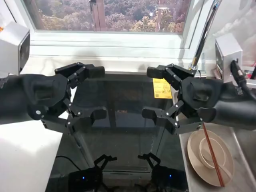
视觉工具实际返回图片 2
视觉工具实际返回图片 3
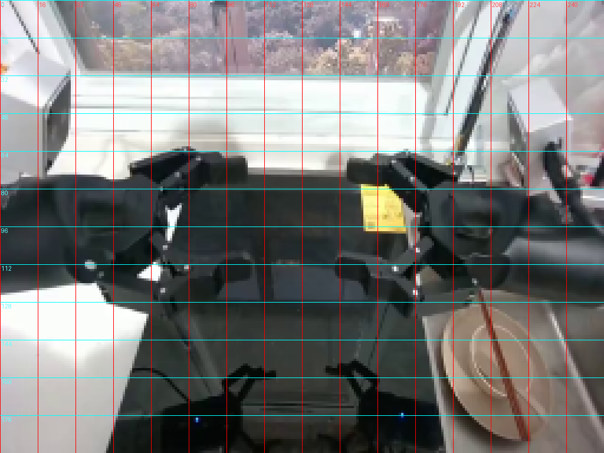
视觉工具实际返回图片 4
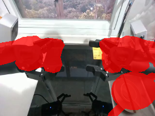
视觉工具实际返回图片 5
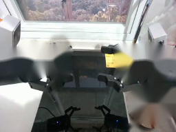
视觉工具实际返回图片 6
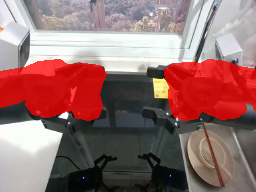
视觉工具实际返回图片 7
视觉工具实际返回图片 8
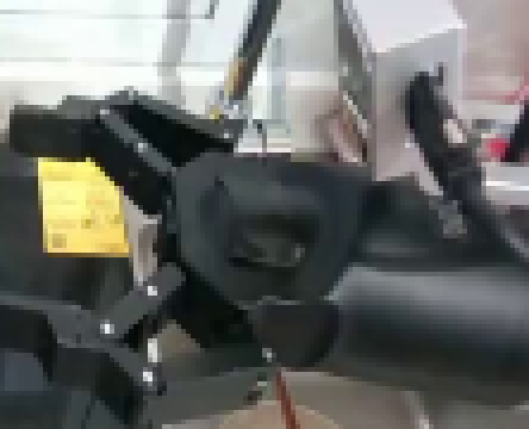
视觉工具实际返回图片 9
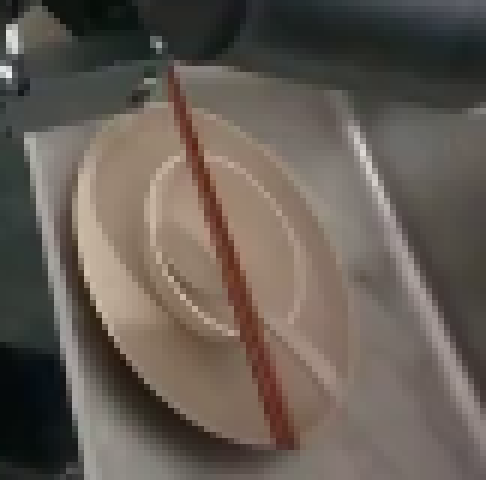
视觉工具实际返回图片 10
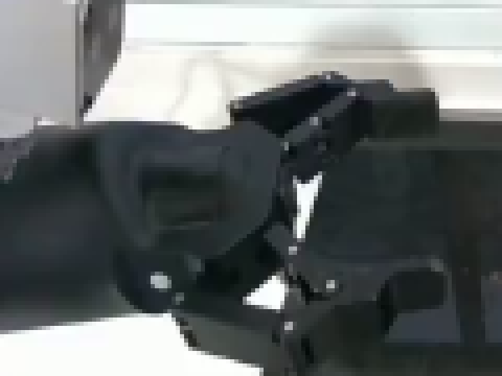
视觉工具实际返回图片 11
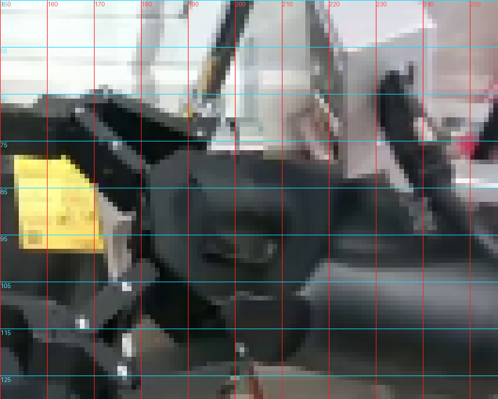
视觉工具实际返回图片 12
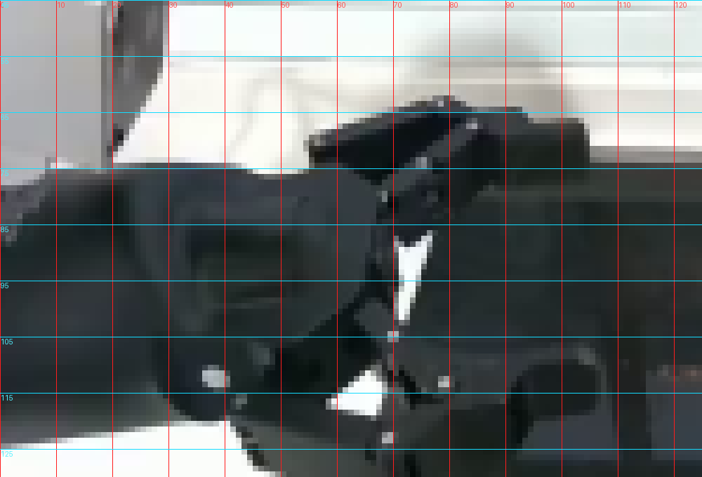
视觉工具实际返回图片 13
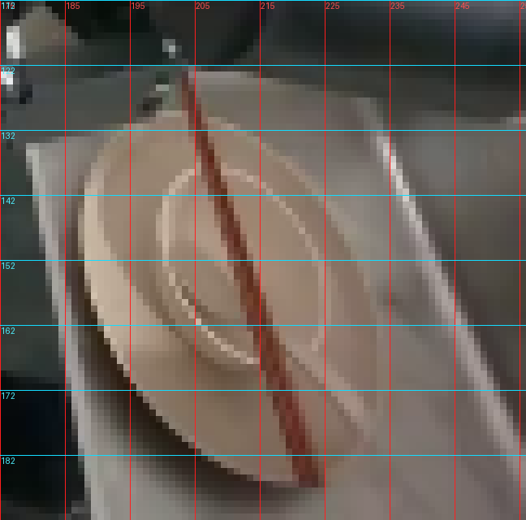
视觉工具实际返回图片 14
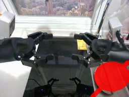
视觉工具实际返回图片 15
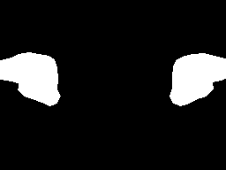
视觉工具实际返回图片 16

视觉工具实际返回图片 17
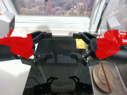
视觉工具实际返回图片 18
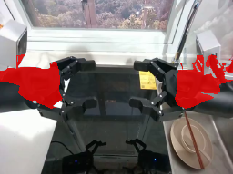
视觉工具实际返回图片 19
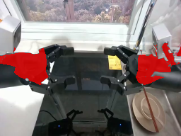
视觉工具实际返回图片 20
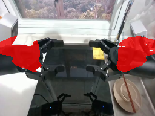
视觉工具实际返回图片 21
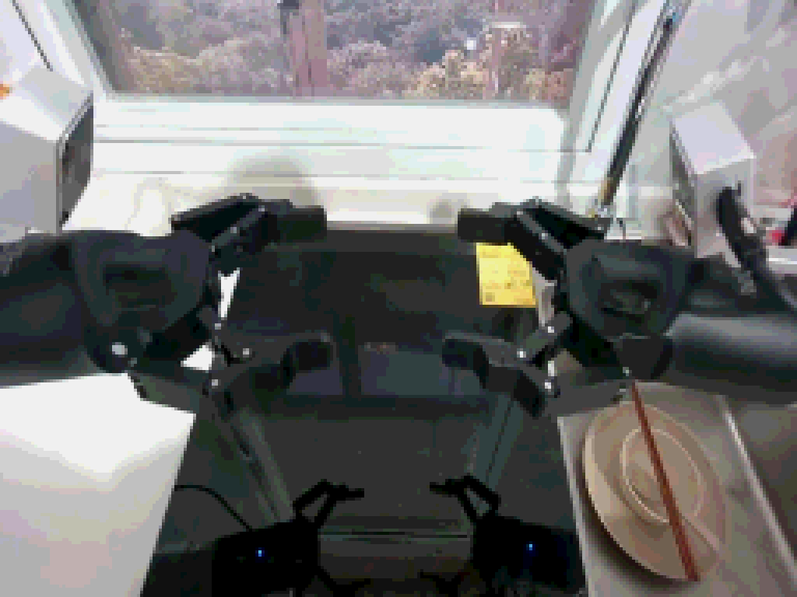
视觉工具实际返回图片 22
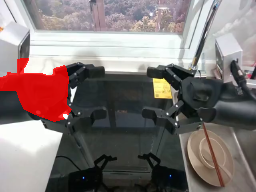
视觉工具实际返回图片 23
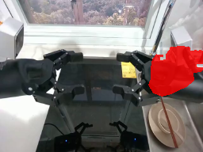
视觉工具实际返回图片 24
视觉工具实际返回图片 25
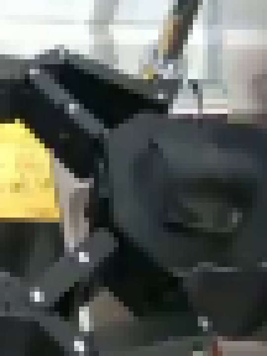
视觉工具实际返回图片 26
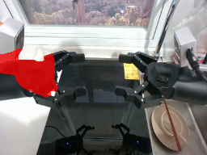
视觉工具实际返回图片 27
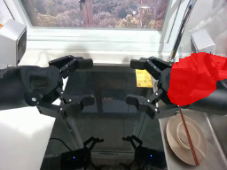
视觉工具实际返回图片 28
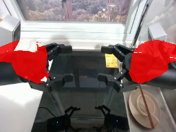
视觉工具实际返回图片 29
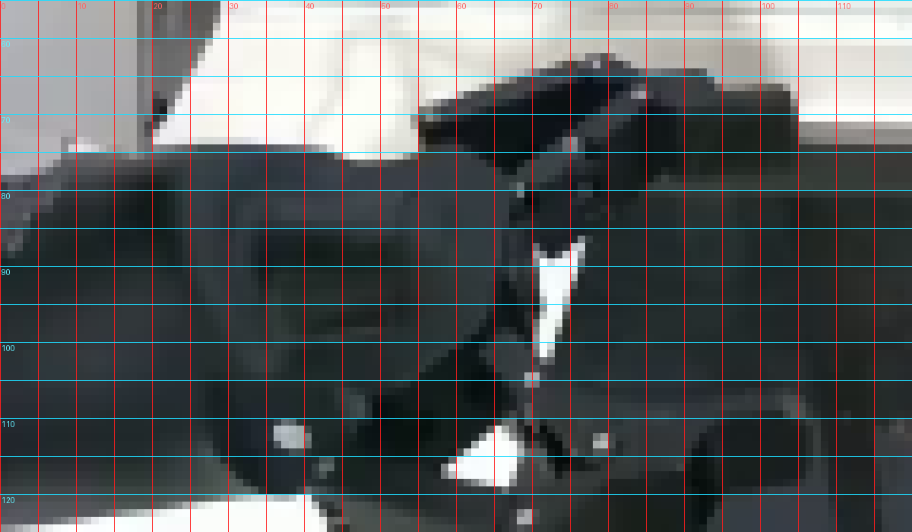
视觉工具实际返回图片 30
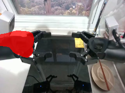
视觉工具实际返回图片 31
视觉工具实际返回图片 32
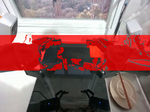
视觉工具实际返回图片 33
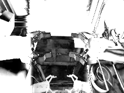
视觉工具实际返回图片 34
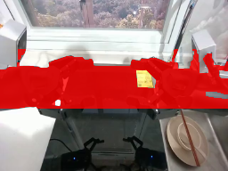
保存候选 1 份；完成命令 35 次；可验证图片返回 34 张。原始 API 响应与完整日志保留在本地。